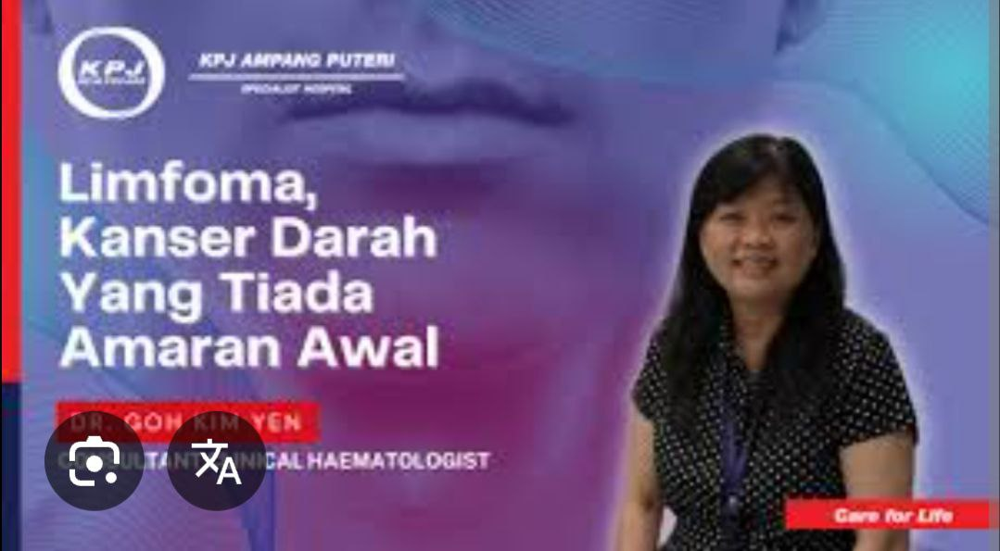

Welcome — Dr. Goh Kim Yen
Consultant Clinical Haematologist with years of experience in diagnosing and treating blood disorders including lymphoma, anemia, and clotting disorders. Compassionate care, evidence-based treatment.
Clinic contact: 03-42895000 ext 4478 • WhatsApp: 011-5423 1300
About
Dr. Goh Kim Yen specialises in clinical haematology with a focus on patient-centred diagnosis and personalised treatment plans. She leads clinics, participates in multidisciplinary care, and is experienced in both outpatient and inpatient haematology management.
Latest Presentation

Limfoma — Early presentation and management
Public talk at KPJ Ampang Puteri
Public talk at KPJ Ampang Puteri